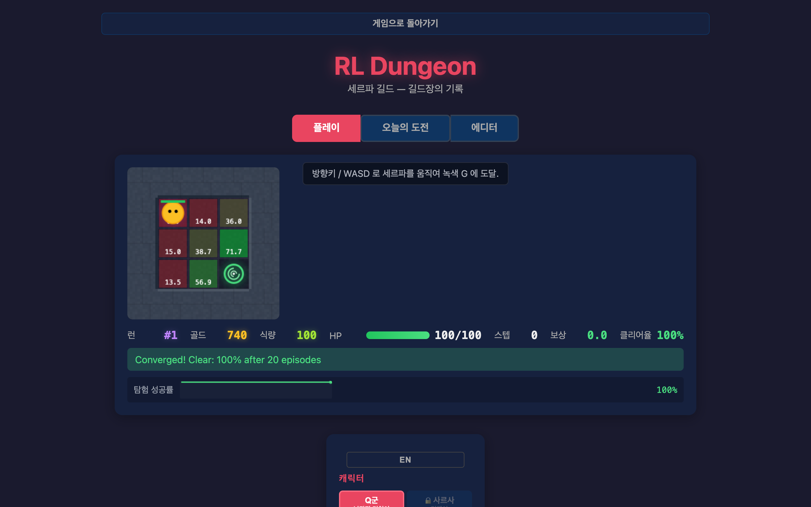
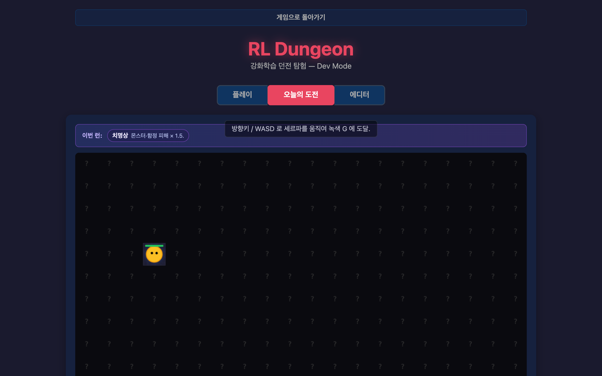
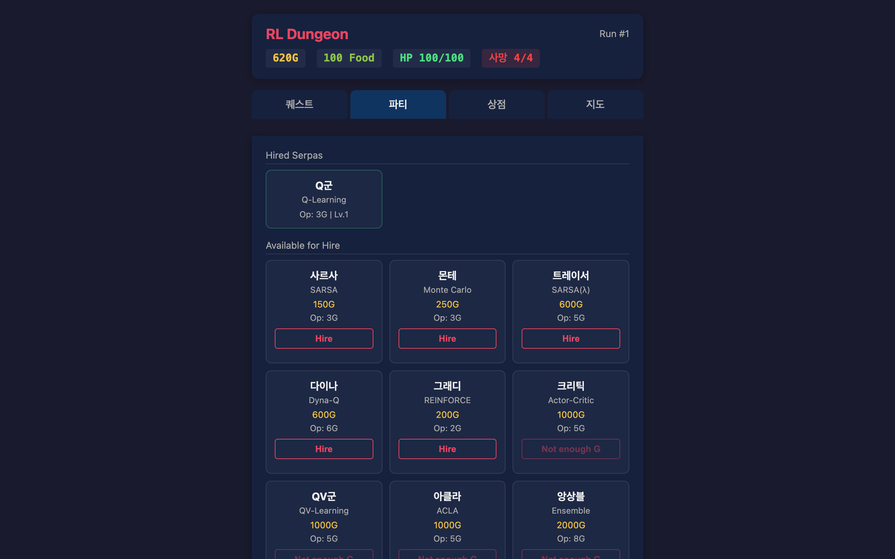
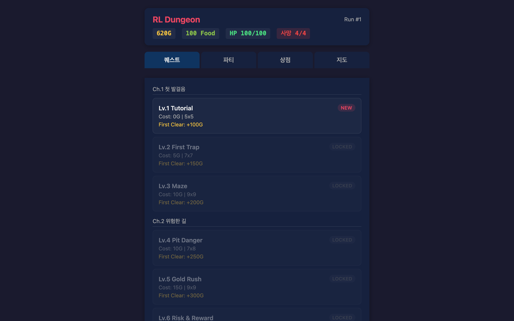

시드 기반 런
매 런 다른 모디파이어. 데일리 시드는 모든 플레이어가 공유 — 10분 챌린지의 토대.
알고리즘이 곧 캐릭터인 시드 기반 로그라이크
매 런 다른 모디파이어 아래 한정된 세르파 풀로 던전을 답파한다.
매 런 다른 모디파이어. 데일리 시드는 모든 플레이어가 공유 — 10분 챌린지의 토대.
15종 RL 알고리즘이 각기 다른 성격의 세르파로 등장. 학명은 hover 툴팁, 표면은 “낙관적 멍청이 / 겁쟁이 / 공상가” 같은 성격 태그.
Q-value 히트맵 + 정책 화살표 + sparkline 디폴트 ON — 학습이 눈에 보이는 시각 시그니처.



